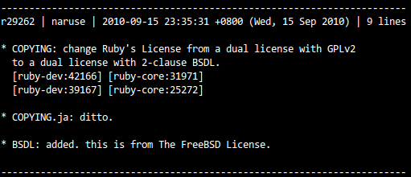
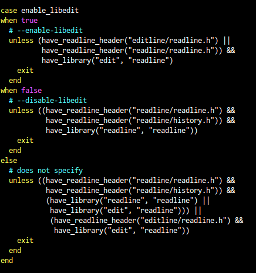
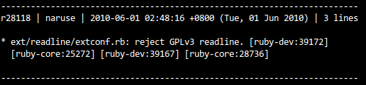
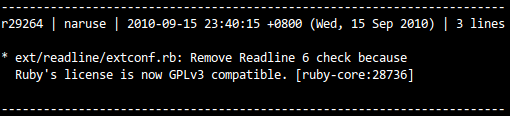

也紀念我們永遠的朋友 李士傑先生（Shih-Chieh Ilya Li）。
開放原始碼的相容與互斥性：從 Ruby 社群變更開放原始碼授權來探討
前言
Ruby 是屬於開放原始碼的物件導向程式語言，近年因 Ruby on Rails (RoR) 開放網頁應用框架的興起而廣為人知，並於 2006 年由 TIOBE 獲選為年度程式語言。
過去，Ruby 採用 GPL-2.0 或 Ruby 授權 的雙重開放原始碼授權，但從 2011 年 7 月 31 日所釋出的 Ruby 1.9.3 preview1 版本裡，筆者發現除了功能性的改進外，對於開放原始碼授權也進行了大幅度的變更。
此次 Ruby 社群將原本「GPL-2.0 或 Ruby 授權的雙重開放原始碼授權」，變更為「BSD-2-Clause 或 Ruby 授權的雙重開放原始碼授權」。其中最重大的改變，就是將 GPL-2.0 變更為 BSD-2-Clause。這引起了許多開放原始碼社群的注意，尤其是 Ruby 程式語言的開發及應用者本身，因為授權的變更將影響專案的開發模式或商業利用。
筆者從 Ruby 原始碼的版本控制系統中追蹤，發現早在 2010 年 9 月 15 日的 29262 版本號紀錄中，Ruby 社群已進行此次授權的變更。

▲ 圖1 Ruby 核心原始碼第 29262 版本號的紀錄。
在軟體專案開發過程中，不管是開放原始碼軟體或非開放原始碼軟體，除了要達到新功能的需求外，還要兼具法律授權條款的相容性要求。也就是除了要認知軟體的合法性及適用範圍外，還需要分析各軟體授權間是否存在互斥性。如果專案中，某些軟體的授權是具有關聯且互斥的，這意謂著這些軟體在法律上並不允許共存於此專案中，此時若強制進行散佈或使用，將面臨侵權的法律責任風險。
為了進一步分析此案例，筆者接下來將與讀者一起探討開放原始碼授權的互斥關係，並尋找 Ruby 社群為何要進行授權變更的原因。
GPL-2.0 與 GPL-3.0 的授權互斥性
自由軟體基金會 (Free Software Foundation) 明確指出 GPL-2.0 與 GPL-3.0 是彼此互斥的，這意謂著在同一專案中，該兩款授權的軟體是不得同時共存的。我們也可以從 GPL-2.0 條款原文中找到互斥的相關條文說明。
其中 GPL-2.0 條款第 4 款，
4. You may not copy, modify, sublicense, or distribute the Program except as expressly provided under this License. Any attempt otherwise to copy, modify, sublicense or distribute the Program is void, and will automatically terminate your rights under this License. However, parties who have received copies, or rights, from you under this License will not have their licenses terminated so long as such parties remain in full compliance.
以及，第 6 款，
6. Each time you redistribute the Program (or any work based on the Program), the recipient automatically receives a license from the original licensor to copy, distribute or modify the Program subject to these terms and conditions. You may not impose any further restrictions on the recipients' exercise of the rights granted herein. You are not responsible for enforcing compliance by third parties to this License.
從 4 與 6 條款中得知，GPL-2.0 是不容許在該條款外，另行新增權利與限制，否則不僅違反了 GPL-2.0 的授權聲明，使用者對於該軟體的 GPL-2.0 授權也隨即終止，也就是不得再繼續使用該軟體。然而我們在 GPL-3.0 條款中，也可以發現 GPL-3.0 相較於 GPL-2.0 的內容外，確實也另行新增了許多不同的條款內容，例如復權機制、額外添附條款，以及禁止將原始碼進行 Tivolization 的運用等等新規定，而這些新增的部分並不符合 GPL-2.0 的規定。
除此之外，Richard Stallman 本人也另行撰寫專文表述 GPL-3.0 與 GPL-2.0 之原始碼是直接不具相容性的 [註1]。因此，在 GPL-2.0 與 GPL-3.0 兩者的條款內容中，我們也可以肯定 GPL-2.0 與 GPL-3.0 是個互斥條款。
GNU Readline Library 6.0 的授權變更
為了鼓勵與推動新的 GPL-3.0 授權條款，自由軟體基金會逐步的將旗下 GNU 軟體專案由 GPL-2.0+ 變更為 GPL-3.0+ [註2]。這種作法可以促使（或迫使）一些軟體專案為了相容性而進行授權的變更，進而改選擇 GPL-3.0 或其它相容條款。從上一章可以了解，因為 GPL-2.0 與 GPL-3.0 的互斥性，這項改變將造成許多開放原始碼專案必須重新檢視目前所採用的授權組合是否仍然合乎授權相容性。
GNUReadline Library 是 GNU 軟體專案中的其中一項。從 2009 年 2 月 20 日釋出的 GNUReadline 6.0 及其後版本，開始使用 GPL-3.0+ 授權條款釋出。這代表著，如果 Ruby 使用 GNUReadline 6.0 或其後版本時，整個 Ruby 專案中將不得再採用與 GPL-3.0 互斥的條款，其中當然也包括了 GPL-2.0。
不幸地，在 Ruby 程式語言中，為了支援 editable command lines 的功能，函式庫在編譯時會選擇使用 GNUReadline 或是 Libedit。這些選擇可以在 Ruby 原始碼庫中的 ext/readline/extconf.rb 程式中發現。

▲ 圖2 ext/readline/extconf.rb 部分原始碼。
過去，由於 Ruby 使用 GPL-2.0 與 Ruby 授權的雙重開放原始碼授權釋出，再加上 Ruby 授權與 GPL（無論是 GPL-2.0 或 GPL-3.0）存在著互斥不相容性。所以當 Ruby 在編譯時若選擇 GNUReadline，則最終授權還可以由雙重授權轉變為 GPL-2.0 的單一授權；反之，若選擇 Libedit，則最終授權也可以轉變為 Ruby 授權的單一授權。
但是若繼續使用 GNUReadline 6.0 及其後版本時，會因為 Ruby 本身授權的關係，不僅最終無法以 GPL-2.0 授權釋出，也無法以 Ruby 授權來釋出。這使得 Ruby 的散佈者面臨了侵權的風險。
社群為了因應 GNUReadline 6.0 及其後版本授權變更的互斥性，被迫於 2010 年 6 月 1 日的 28118 版本號中，在 ext/readline/extconf.rb 程式加入了拒用 GNUReadline 6.0 及其後版本的判斷條件。

▲ 圖3 Ruby 核心原始碼第 28118 版本號的紀錄。
如此的作法，確保了 Ruby 若繼續使用 GNUReadline 時，會主動避開 6.0 及其後版本，使得最終授權仍可變更為 GPL-2.0，而暫時解決了授權互斥性的問題。
在此過渡時期，Ruby 開發者彼此間持續討論著授權議題。直到 29262 版本號時，才將 Ruby 的授權變更為「BSD-2-Clause 或 Ruby 授權的雙重開放原始碼授權」，並於 2010 年 9 月 15 日的 29264 版本號中，將先前拒用 GNUReadline 6.0 及其後版本的判斷條件去除。

▲ 圖4 Ruby 核心原始碼第 29264 版本號的紀錄。
此後，Ruby 專案終於可以繼續自由選擇 GNUReadline 或是 Libedit，而不用再擔心授權互斥性的問題。
Ruby 社群為何不選擇 GPL-3.0+ ？
其實除了上述的選擇外，Ruby 社群還可以有別的選擇，例如全面升級為 GPL-3.0+。
也就是如果 Ruby 變更為 「GPL-3.0+ 或 Ruby 授權的雙重開放原始碼授權」。在編譯時選擇 GNUReadline 時，最終授權將可由雙重授權變更為 GPL-3.0+ 的單一授權；反之，若選擇 Libedit 則最終授權將可由雙重授權變更為 Ruby 授權的單一授權。如此先前遇到的問題依然可以解決，但又為何 Ruby 社群選擇的不是 GPL-3.0+ 而是 BSD-2-Clause？
這個問題的答案可以從「Change Ruby's License to BSDL + Ruby's dual license」的討論串中得到解答。
根據 Naruse 的說法，選擇 BSD-2-Clause 授權條款時，開發者不僅可以繼續使用 GPL-3.0 的軟體，也可以把原本是 Ruby 授權的程式改由 BSD 授權來撰寫。當然，除了 Naruse 在該文中所述的優點外，筆者認為這個改變還帶來了其它的優點，如：
－因為 BSD-2-Clause 授權條款相容於 GPL-2.0 及 GPL-3.0。所以開發者不僅可以繼續使用 GPL-2.0 的軟體專案，也可以選擇 GPL-3.0 的軟體專案。這擴大了開發者擁有的選擇性，但最後仍然要確保最終的授權是否具互斥性，也就是在同一專案中，要避免同時選用 GPL-2.0 與 GPL-3.0。
－更有利於整合其它與 GPL 互斥的開放原始碼授權條款的軟體專案，以納百川，成其大。
結論
在此案例中，我們可以看到一個正確處理授權互斥的流程。
1. 當發現專案授權衝突發生時，馬上進行排除或隔離。本案中 Ruby 社群將 GNUReadline 6.0 及其後版本先行排除。
2. 專案成員進行理性的討論，並重新選擇一個最適合專案的授權組合。
3. 最後修正專案授權聲明，並恢復先前處理的狀態。
在 Ruby 社群中，筆者看到了一種不同的開放心態。與其它軟體專案不同的是，他們並非將授權變更為常見的 GPL-3.0 或 GPL-3.0+，而是回頭探究本身專案的特性以及未來發展的需求，最後選擇了一個最適合自己的授權組合－BSD-2-Clause 或 Ruby 授權。這項調整不僅為開發人員帶來了更多的選擇權利，也使得 Ruby 更可以容納更多不同種類的開放原始碼授權專案。
註解
註1：「[Why Upgrade to GPL Version 3](https://gplv3.fsf.org/rms-why.html)」。專文第三段："When we say that GPLv2 and GPLv3 are incompatible, it means there is no legal way to combine code under GPLv2 with code under GPLv3 in a single program. This is because both GPLv2 and GPLv3 are copyleft licenses: each of them says, “If you include code under this license in a larger program, the larger program must be under this license too.” There is no way to make them compatible. We could add a GPLv2-compatibility clause to GPLv3, but it wouldn't do the job, because GPLv2 would need a similar clause."
註2：加號(+)意謂著「後續版本」(or later)。如 GPL-2.0+ 代表 GPL-2.0、GPL-3.0 及未來新的 GPL 授權版本；而 GPL-3.0+ 代表 GPL-3.0 及未來新的 GPL 授權版本。
相關連結
Ruby 官方網站 https://www.ruby-lang.org/
GPL-2.0 授權全文 https://www.gnu.org/licenses/gpl-2.0.html
Ruby 授權全文 https://www.ruby-lang.org/en/LICENSE.txt
BSD-2-Clause 授權全文 https://www.opensource.org/licenses/bsd-license.php
Ruby 原始碼版本控制庫 https://www.ruby-lang.org/en/community/ruby-core/
GPL-3.0 授權全文 https://www.gnu.org/copyleft/gpl-3.0.html
GNU 軟體專案清單 https://www.gnu.org/software/software.html
GNU Readline Library 官方網站 https://www.gnu.org/s/readline/
Libedit 官方網站 https://sourceforge.net/projects/libedit/
OSSF Newsletter : 第 179 期 「臺灣博碩士論文知識加值系統」強力徵求論文全文的網路下載與公示授權！
Tags: Ruby, License, GPL 2.0, BSD,
Category: Enterprise Application
Special


Address：No.128, Sec.2, Academia Rd., Institute of Information Science, Academia Sinica, Nangang District, Taipei City 11529, Taiwan (R.O.C).
Privacy Policy. Terms-of-use